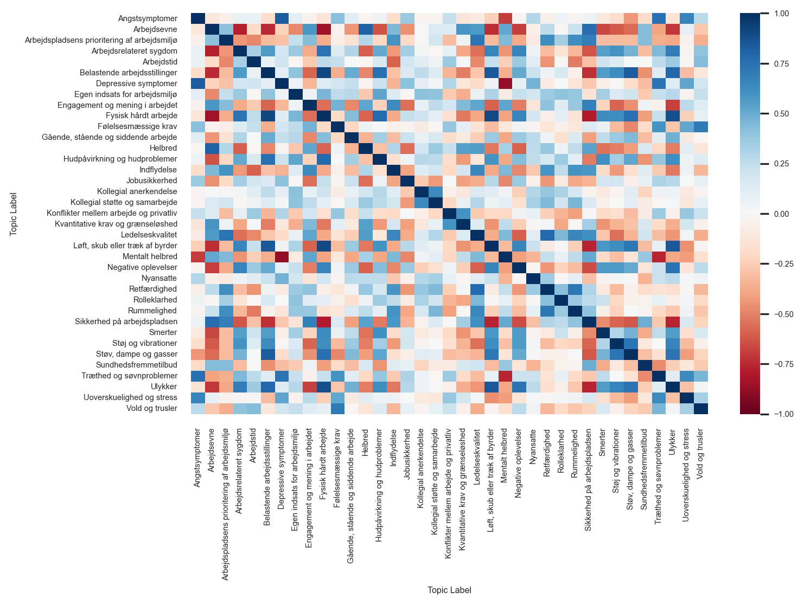

import numpy as np
import pandas as pd
import matplotlib.pyplot as plt
import seaborn as sns
from sklearn.model_selection import cross_validate
from xgboost import XGBRegressor
from hyperopt import tpe, fmin, hp, STATUS_OK, Trials, space_eval
from hyperopt.pyll import scope
import shap
from IPython.display import Markdown
from tabulate import tabulatePFA case - Anton Baht
Initialize Packages
Get data
By inspecting the CSV, it is clear that first line is the header and each element is seperated with “;” and using “,” for decimals.
df_branche = pd.read_csv('data/arbejdsmarkedsanalyse_brancher.csv', sep=";", header = 0, decimal=',')
df_ka = pd.read_csv('data/arbejdsmarkedsanalyse_koen_alder.csv', sep=";", header = 0, decimal=',')Both dataframes has a row that is a sum of all others. These are then removed, as they dont contain info.
df_ka = df_ka[df_ka['Group'].map(len)>7] #Fjerner rækker med ingen alder specificeret.
df_ka = df_ka[['Group','Score','Score (Indekseret score)','Question Label','Topic Label','Akse']]
Markdown(tabulate(df_ka.sample(5,random_state=0), headers='keys',showindex=False))| Group | Score | Score (Indekseret score) | Question Label | Topic Label | Akse |
|---|---|---|---|---|---|
| Kvinder, 25 - 34 år | 3.20435 | 64.087 | Modtager nødvendig ris og ros | Ledelseskvalitet | Score |
| Mænd, 18 - 24 år | 4.73874 | 47.3874 | Fysisk hårdt arbejde | Fysisk hårdt arbejde | Score |
| Mænd, 55 - 64 år | 43.7222 | 43.7222 | Forstyrrende støj mindst 1/4 af tiden | Støj og vibrationer | Andel (%) |
| Mænd, 45 - 54 år | 9.64098 | 9.64098 | Hudkontakt med kemikalier mindst 1/4 af tiden | Hudpåvirkning og hudproblemer | Andel (%) |
| Mænd, 45 - 54 år | 3.25624 | 65.1248 | Arbejdsmæssig anerkendelse og påskønnelse fra ledelsen | Ledelseskvalitet | Score |
df_branche = df_branche[df_branche['Group']!="Total"] #Fjerner agg. række.
df_branche = df_branche[['Group','Field Values','Field Values Index','Score','Score (Indekseret score)','Question Label','Topic Label','Hoej Score Godt','Akse']]
Markdown(tabulate(df_branche.sample(5,random_state=1), headers='keys',showindex=False))| Group | Field Values | Field Values Index | Score | Score (Indekseret score) | Question Label | Topic Label | Hoej Score Godt | Akse |
|---|---|---|---|---|---|---|---|---|
| Frisører og kosmetologer | 3.55318 | 76.087 | 3.55318 | 71.0636 | Gennemsnit af spørgsmålene om ledelseskvalitet | Ledelseskvalitet | 1 | Score |
| Socialrådgivere | -3.10447 | 33.495 | 3.10447 | 62.0893 | Træthed efter arbejdsdag | Træthed og søvnproblemer | 0 | Score |
| Læger | 3.10023 | 41.0754 | 3.10023 | 62.0046 | Vejledning og instruktion i sikker udførelse | Sikkerhed på arbejdspladsen | 1 | Score |
| Kundeinformationsarbejdere | -45.5993 | 36.5723 | 45.5993 | 45.5993 | Stress både fra arbejdet og fra privatlivet blandt personer med stress | Uoverskuelighed og stress | 0 | Andel (%) |
| Dagplejere og børneomsorgsbeskæftigede | 3.04212 | 43.5083 | 3.04212 | 60.8425 | Leder involverer dig i tilrettelæggelsen af dit arbejde | Ledelseskvalitet | 1 | Score |
Transforming the data
By pivoting the data such that one row represents one group, one can start modelling the scores. For sake of brevity, the questions of a given topic has been mean aggregated. This reduces the dimension from 109 -> 37
df_ka_wider = df_ka.pivot_table(index = 'Group', columns = 'Topic Label', values = 'Score (Indekseret score)')
df_branche_wider = df_branche.pivot_table(index = 'Group', columns = 'Topic Label', values = 'Score (Indekseret score)')
df_wide = pd.concat([df_branche_wider, df_ka_wider])
Markdown(tabulate(df_wide.head(), headers='keys'))| Group | Angstsymptomer | Arbejdsevne | Arbejdspladsens prioritering af arbejdsmiljø | Arbejdsrelateret sygdom | Arbejdstid | Belastende arbejdsstillinger | Depressive symptomer | Egen indsats for arbejdsmiljø | Engagement og mening i arbejdet | Fysisk hårdt arbejde | Følelsesmæssige krav | Gående, stående og siddende arbejde | Helbred | Hudpåvirkning og hudproblemer | Indflydelse | Jobusikkerhed | Kollegial anerkendelse | Kollegial støtte og samarbejde | Konflikter mellem arbejde og privatliv | Kvantitative krav og grænseløshed | Ledelseskvalitet | Løft, skub eller træk af byrder | Mentalt helbred | Negative oplevelser | Nyansatte | Retfærdighed | Rolleklarhed | Rummelighed | Sikkerhed på arbejdspladsen | Smerter | Støj og vibrationer | Støv, dampe og gasser | Sundhedsfremmetilbud | Træthed og søvnproblemer | Ulykker | Uoverskuelighed og stress | Vold og trusler |
|---|---|---|---|---|---|---|---|---|---|---|---|---|---|---|---|---|---|---|---|---|---|---|---|---|---|---|---|---|---|---|---|---|---|---|---|---|---|
| Bibliotekarer og beskæftigede med kultur | 25.2728 | 80.0399 | 58.1606 | 9.80649 | 22.6321 | 16.1405 | 19.6527 | 72.1976 | 77.9827 | 30.4553 | 56.3764 | 51.3573 | 73.7383 | 13.9961 | 83.4248 | 39.532 | 80.3395 | 84.9344 | 56.4119 | 62.4987 | 69.762 | 15.2203 | 68.4508 | 11.3807 | 21.1369 | 70.8311 | 75.0167 | 77.2604 | 61.9836 | 16.7985 | 17.2873 | 5.37324 | 27.4676 | 59.2383 | 2.79964 | 45.5469 | 7.21797 |
| Bogholdere | 24.8092 | 83.7386 | 58.1627 | 7.9526 | 13.669 | 9.49475 | 17.3503 | 71.1337 | 74.9976 | 8.43924 | 50.8787 | 52.5674 | 72.6884 | 6.14438 | 82.9987 | 39.1453 | 79.5054 | 83.756 | 51.0322 | 61.2184 | 71.4599 | nan | 71.1127 | 10.542 | 14.6178 | 70.8336 | 77.5242 | 76.7758 | 63.0931 | 15.8563 | 22.8314 | 0.493945 | 33.7191 | 56.2398 | 1.93777 | 44.1335 | 0.875693 |
| Brandmænd, reddere og sikkerhedsvagter | 22.9202 | 81.6019 | 55.6052 | 13.7031 | 47.5004 | 20.5223 | 18.0126 | 71.8965 | 73.3012 | 42.0554 | 62.1426 | 48.7351 | 73.7675 | 22.7308 | 73.1433 | 41.7073 | 83.2657 | 86.8896 | 53.3997 | 58.2796 | 63.8194 | 30.0211 | 70.2157 | 15.9192 | 13.9893 | 65.1685 | 75.9648 | 70.2113 | 60.7443 | 19.5786 | 31.0022 | 10.5426 | 33.355 | 59.419 | 9.97659 | 43.4431 | 11.5921 |
| Bude og kurerer | 27.9031 | 75.5473 | 53.5068 | 15.6518 | 27.8332 | 41.9262 | 21.8593 | 65.7982 | 65.9452 | 59.1401 | 49.4771 | 57.3121 | 66.2872 | 20.5857 | 69.6791 | 49.8139 | 77.2392 | 77.5525 | 58.017 | 59.7954 | 65.7003 | 37.3666 | 66.3701 | 19.2517 | 9.98993 | 63.4601 | 73.5023 | 68.0577 | 56.8468 | 22.109 | 21.636 | 12.3374 | 15.8661 | 60.1965 | 16.3957 | 45.6528 | 3.29729 |
| Bus- og taxachauffører, lokoførere m.fl. | 21.7997 | 75.1818 | 53.0323 | 11.4695 | 41.9739 | 27.5821 | 17.0019 | 71.8264 | 69.9848 | 35.6958 | 56.3573 | 47.4458 | 65.4526 | 14.1883 | 71.7981 | 44.0879 | 80.1348 | 79.693 | 53.6018 | 57.6157 | 62.8537 | 15.4111 | 70.9713 | 15.3798 | 16.9072 | 64.4935 | 76.8665 | 71.0475 | 57.4036 | 17.422 | 32.5798 | 14.4608 | 27.3857 | 56.0211 | 7.75024 | 43.6821 | 12.8221 |
Correlations
Let us look at the correlations between the answers of each topic.
sns.set(font_scale = 0.5)
pl = plt.figure()
pl.set_figwidth(8)
correlations = df_wide.corr()
sns.heatmap(round(correlations,2), cmap='RdBu', annot=False, vmin=-1, vmax=1)
plt.show()
The topics can be clustered using hierarchical clustering with the correlation as distance metric and average linkage method.
sns.clustermap(correlations, method="average", cmap='RdBu', annot=False, vmin=-1, vmax=1,dendrogram_ratio=0.1, figsize=(8,8),cbar_pos = (0.8, 0.05, .03, .15))
plt.show()Choosing a response variable
From the above clustering of correlations the topic of “Fysisk hårdt arbejde” has been chosen as a response variable. The below plot looks at the distribution of scores in that topic across groups.
sns.displot(df_wide, x="Fysisk hårdt arbejde", kind="kde",aspect = 1.5)
plt.xlim(0, 100)
plt.show()Training a model
Let the training data be the industry dataset and the test data be the gender/age dataset.
y_train = df_branche_wider.loc[:,"Fysisk hårdt arbejde"]
y_test = df_ka_wider.loc[:,"Fysisk hårdt arbejde"]
X_train = df_branche_wider.drop("Fysisk hårdt arbejde", axis = 1)
X_test = df_ka_wider.drop("Fysisk hårdt arbejde", axis = 1)Let us define a function that evaluates a hyperparameter set. 5-fold cross validation is used and RMSE of the validation set is returned for the hyperparameter algorithm.
def hyperparameter_tuning(space):
model=XGBRegressor().set_params(**space)
scores = cross_validate(model, X_train, y_train,scoring = "neg_root_mean_squared_error", cv=5)
score= scores['test_score'].mean()
return {'loss':-score, 'status': STATUS_OK, 'model': model}The hyperparameter space is defined:
space={'max_depth': scope.int(hp.quniform("max_depth", 1, 10, 1)),
'gamma': hp.uniform ('gamma', 0,0.05),
'reg_alpha' : hp.uniform('reg_alpha', 0,0.3),
'reg_lambda' : hp.uniform('reg_lambda', 0,1),
'colsample_bytree' : hp.uniform('colsample_bytree', 0.5,1),
'min_child_weight' : hp.uniform('min_child_weight', 0, 10),
'n_estimators': scope.int(hp.quniform('n_estimators', 10, 20, 1))
}RMSE is minimized using bayesian optimization with the Tree Parzen Estimator.
trials = Trials()
best = fmin(fn=hyperparameter_tuning,
space=space,
algo=tpe.suggest,
max_evals=100,
trials=trials,
verbose=False)
space_tuned = space_eval(space,best)
print (space_tuned){'colsample_bytree': 0.6454069655507145, 'gamma': 0.03343089775028589, 'max_depth': 7, 'min_child_weight': 9.040647172944269, 'n_estimators': 18, 'reg_alpha': 0.017670187354093064, 'reg_lambda': 0.028091070604212398}Model is evaluated on the test set (gender/age dataset).
eval_set = [(X_train, y_train), (X_test, y_test)]
model=XGBRegressor().set_params(**space_tuned)
model.fit(X_train, y_train,eval_set=eval_set, eval_metric="rmse")
results = model.evals_result()x_axis = range(len(results['validation_0']['rmse']))
fig, ax = plt.subplots()
ax.plot(x_axis, results['validation_0']['rmse'], label='Train')
ax.plot(x_axis, results['validation_1']['rmse'], label='Test')
ax.legend()
plt.ylabel('RMSE')
plt.title('XGBoost RMSE')
plt.show()Feature importance
In order to understand the model, Shapley values is computed and in the following summary plot.
explainer = shap.TreeExplainer(model)
shap_values = explainer(X_train)
shap.summary_plot(shap_values, X_train, max_display=7)Shapley values can also be used to explain individual predictions.
index=0
shap_values = explainer(X_test)
shap.plots.waterfall(shap_values[index],show=False)
plt.title(f'The group [{X_test.index[0]}] had a score of: {y_test[index]:.3f}')
plt.gcf().set_size_inches(6,5)
plt.show()
Referencer
Susanne Rundé Jørgensen - TDC Finans \ Srjo@cbb.dk \ +45 60507993